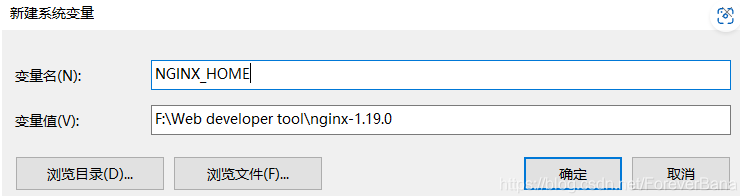
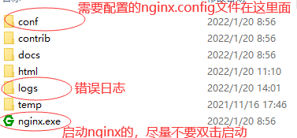
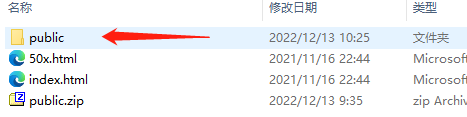
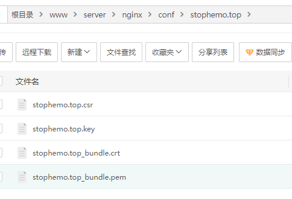
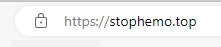

hexo-butterfly部署（windows）
一、服务器初始化配置
实例密码、防火墙等
二、安装环境
安装node.js、npm
https://nodejs.org/dist/v18.12.1/node-v18.12.1-x64.msi
安装Git
官网链接：
https://github.com/git-for-windows/git/releases/download/v2.39.0.windows.1/Git-2.39.0-64-bit.exe
国内镜像链接
https://registry.npmmirror.com/binary.html?path=git-for-windows/v2.39.0.windows.1/
安装Nginx
官网下载
https://nginx.org/download/nginx-1.20.2.zip
解压，双击nginx.exe 启动，会闪现一个小黑框
服务器上访问http://localhost:80，出现Welcome to Nginx！ 即成功安装
打开任务管理器关闭nginx进程。
nginx基础操作命令
没有配置环境变量的话需要在nginx文件夹下以 ./nginx 代替nginx
# 启动 |
nginx配置环境变量
系统变量——> 环境配置——>新建系统变量 NGINX_HOME

然后将 %NGINX_HOME% 添加到系统变量PATH
安装hexo相关环境
- 所有必备的应用程序安装完成后，即可使用 npm 安装 Hexo。
$ npm install -g hexo-cli |
- Hexo 3.0 把服务器独立成了个别模块，您必须先安装 hexo-server才能使用。
$ npm install hexo-server --save |
$ npm install hexo-deployer-git --save |
三、nginx配置部署

1。项目文件放于html文件夹下

2。修改配置文件
用记事本儿打开conf/nginx.conf, 直接看server{。。。}
|
如果 域名、ssl配好后
参照如下规则配置
我这里是将ssl证书放在nginx/conf文件夹下

80端口的server
server { |
443 ssl 的 server
server { |
配置完成，重启nginx服务
nginx -s reload |
浏览器访问域名地址，测试通过

hexo-butterfly部署（linux）
服务器配置同上，
安装环境的方式不一样
因为我用的宝塔面板安装的，没有的可以自行百度各个环境的安装教程
本博客所有文章除特别声明外，均采用 CC BY-NC-SA 4.0 许可协议。转载请注明来自 StopHemo！
 wechat
wechat alipay
alipay
评论